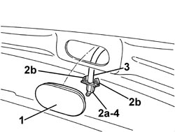

5050B10 FRONT WINDSCREEN WASHER JETS - R+R CLEAN AND/OR POSITION
- Path
- Procedures > 50 AUXILIARY UNITS > 5050 SCREEN WASHERS AND HEADLAMP WASH/WIPE > 5050B WINDSCREEN WASH/WIPE > 5050B10 FRONT WINDSCREEN WASHER JETS - R+R CLEAN AND/OR POSITION
- Kind
- repair procedure (removal / refitting; the operation number is the code)
- Applies to
- all engines; all production periods
- Interactive page
- https://sloeber94.github.io/elrnDB-aBrrSpdr/en/#/946002300
Applies to: all engines; all production periods
 Removing
Removing
 Refitting
Refitting- Open the bonnet.
1. Release the rubber cover.
2. Move the windscreen washer jet (2a) releasing the retainers (2b).
3. Disconnect the pipe from the windscreen washer.
4. Keep the windscreen washer jet.

Applies to: all engines; all production periods
Refitting
Removing- Check that the windscreen washer jet is not damaged. Clean it if necessary.
- Connect the pipe to the windscreen washer jet.
- Place the windscreen washer jet in position and attach the retainers.
- Fit the rubber cover.
- Close the bonnet.
- Check that the windscreen washer jet is working.